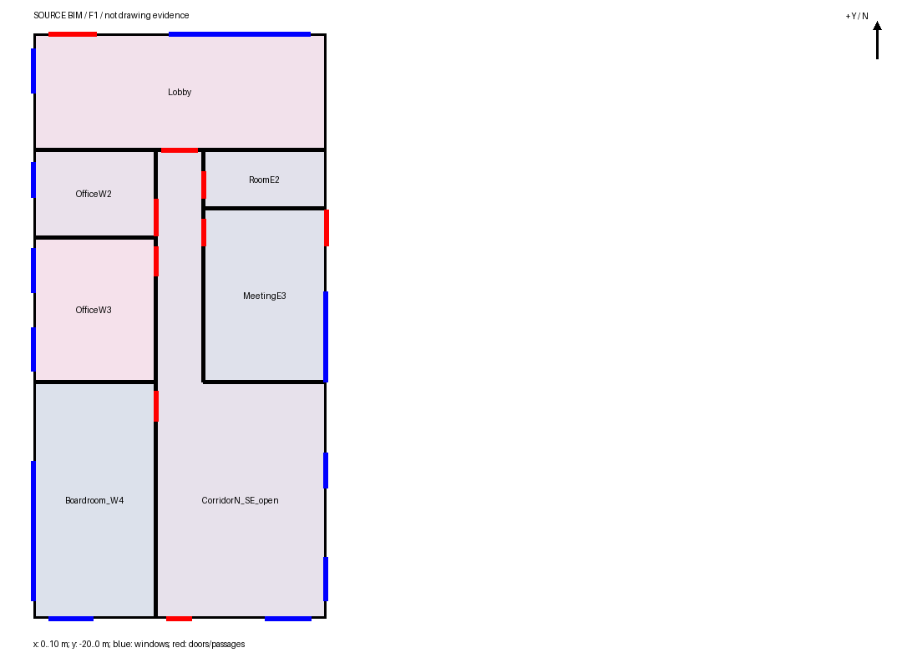

原平面与实际源模型


Sonnet 从五张原图与建筑声明独立生成了7空间、11窗、9门。 几何自洽，源与显示重放、实际离线查看均通过；但东南房间错并、东侧门窗错位，不能替换已有采用基点。
通用方法参考已送达；没有旧BIM、开发坐标、正确数量或GT进入生成。实际运行963.36秒，CLI估算$2.6217162，非订阅账单。

模型北边y=0、南边y=-20；参照南边y=0。仅平移[0,20,0]，无拟合。 蓝色参照，橙色候选。原坐标与平移后的分区均保留，平移后仍为severe。
同类型同立面且沿墙有重叠的11对只是对应候选，不是11项正确。 另外东侧2窗及1外门与参照无重叠，原处缺失、错处新增。单位米；高度差为[底,顶]。
| 源对象 | 类型 | 立面 | 中心误差 | 宽差 | 高度差 |
|---|---|---|---|---|---|
| ND1_entrance | door | North | 0.003912 | 0.025344 | [-0.199989, -0.199989] |
| SD1_door | door | South | 0.003774 | -0.018458 | [-0.199989, -0.199989] |
| EW1_window | window | East | 1.625144 | -1.691335 | [1.1e-05, 1.1e-05] |
| NW1_window | window | North | 0.006116 | 0.020937 | [1.1e-05, 1.1e-05] |
| SW1_window | window | South | 0.009008 | 0.015151 | [1.1e-05, 1.1e-05] |
| SW2_window | window | South | 0.009008 | 0.070248 | [1.1e-05, 1.1e-05] |
| WW5_window | window | West | 0.031115 | -0.013205 | [1.1e-05, 1.1e-05] |
| WW4_window | window | West | 0.018446 | -0.014443 | [1.1e-05, 0.600011] |
| WW3_window | window | West | 0.008212 | 0.013068 | [1.1e-05, 0.600011] |
| WW2_window | window | West | 0.013122 | 0.010454 | [1.1e-05, 0.600011] |
| WW1_window | window | West | 0.010771 | 0.013067 | [1.1e-05, 0.600011] |
五原图与声明字节一致，源和显示数据精确重放，17张有保存对应物的工具返回图逐像素一致；离线旋转与交付页可用。 这些是运输和几何事实，不证明原图保真或用户验收。
本轮后续改动：开口挂墙失败时返回放大的局部原图/声明对照，让后续模型更容易核查报错位置。该改动尚无工作模型效果成绩。
{kind=link}